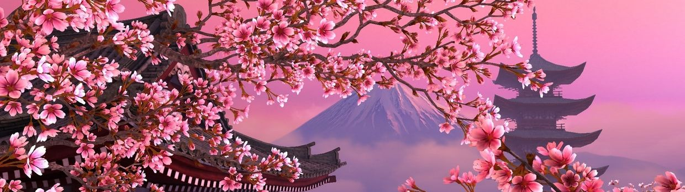

"Культура, говорит один японский педагог, это то, что остается, когда все остальное забыто"
Культура
Япония представляет собой очень интересное государство, известное массой разнообразных традиций и обычаев. Географическое положение страны Восходящего солнца сделало её несколько изолированной от других государств, благодаря чему она развивалась без оглядки на европейские страны. Культура Японии чрезвычайно богата и многообразна. Своеобразные японские традиции формировались под влиянием исторически важных событий. Постепенно Япония превращалась в могучее сплоченное государство, имеющее характерные черты и определенный менталитет населения.
- Чайная церемония
- Японская религия
- Сады камней
- Праздник Сакуры
- Искусство
- Архитектура
ОСНОВНЫЕ АСПЕКТЫ ЯПОНСКОЙ КУЛЬТУРЫ
Религия
Собственная религия древних японцев называлась синтоизм (от «синто» — «путь богов»).
Её последователи считают, что все люди произошли от богов; боги способны перевоплощаться в любые предметы, которые благодаря этому тоже превращались в объект поклонения. Последователи синтоизма поклоняются также священной горе Фудзи, цветущим деревьям и другим явлениям природы. Главной считалась богиня солнца Аматэрасу, от которой произошли императоры — микадо. Поэтому Японию называют Страной восходящего Солнца, а микадо являлся верховным служителем культа Аматэрасу.
В конце эпохи Токугава в противовес растущему влиянию буддизма и конфуцианства в оппозиционных режиму кругах возникла «национальная наука» или «историческая школа», которая выступала за возрождение первозданной чистоты синтоизма как выражения самобытного японского духа. «японской школы» воспевали легендарное прошлое «страны Ямато» (древнее название Японии) с его культом микадо и древней религией синто и проповедовали возвращение к национальным истокам. В результате «реставрации Мэйдзи» вся полнота власти была возвращена микадо. Идеология эры Мэйдзи основывалась на традиционных ценностях японского общества. В японцах возрождался «дух Ямато» и воспитывался культ микадо. Синтоизм пережил второе рождение в качестве национальной религии обновлённого государства.
В 1868 г. было создано специальное управление по делам синто. Буддийские храмы лишались своих земель и подвергались разрушению, предметы культа и священная литература буддистов уничтожались. На основе «государственного синтоизма» строилось всё школьное образование и военная подготовка
Чайная церемония
чайная церемония представляла собой одну из наиболее распространенных форм медитации у монахов-буддистов. С течением времени она стала неотъемлемой частью японской культуры. По своей сути чайная церемония представляет собой встречу чайного мастера и его гостей для теплой беседы и совместного времяпрепровождения, сопровождающегося чаепитием. Конечно же, данный обычай проводится с использованием соответствующей атрибутики в специальном чайном домике (тясицу). Располагается он, как правило, в уютном уголке специально созданного сада.
- В церемонии принимает участие не более пяти человек, и общество подбирается с особой щепетильностью.
- Для участия в церемониальном чаепитии все гости должны надеть специальную одежду.
- Перед самым началом все присутствующие собираются у входа в чайный домик для того, чтобы настроиться на возвышенный лад и отбросить в сторону суетливые мысли и будничный настрой.
- Японская чайная церемония может продолжаться несколько часов.
Это интересно
Сады камней
является центром японской символики в ландшафтном дизайне и интерьере. Это связано с отношением японцев к этому материалу как к самому совершенному творению природы. В японской традиции камень символизирует красоту и величие природы. Большие камни ассоциируются со скалами, волнистая поверхность гравия означает воду.
Сады камней – это абсолют японского символизма, ведь они подразумевают развитие воображения через созерцание, медитацию. Такие сады представляют собой не фрагмент природы, а ее символ. Камни воспринимаются как скульптура – их пластическая выразительность, пропорции, соотношение объемов, размещение в пространстве формируют эстетические качества сада. Все остальные элементы ландшафта выполняют роль фона, который только подчеркивает красоту и уникальность камней.
Задача сада – при помощи застывшей картины заставить человека сосредоточиться, вызывать ассоциативные образы. Согласно учению Дзен, мир таков, каким его мы воспринимаем. Сосредоточившись на камне, вокруг которого начерчены круги, человек начинает видеть погружающийся в воду камень, и плавно расходящиеся концентрические волны.
камень был главным элементом такой композиции. Поэтому в саду размещали только отобранные особым образом экземпляры. Разыскивать валуны отправлялись монахи, они выбирали камни с естественными гранями, имеющие необычную и красивую форму. Эти минералы были отколоты от скалы и вынесены бурными потоками рек в долины. Далее весь отобранный материал должен был расставлен в соответствии с правилами и канонами. Некоторые экземпляры проходили специальную обработку, в результате чего превращались в статуи.
Расставить камни для сада в японском стиле – это искусство, но при этом все должно выглядеть максимально естественно, подчиняться законам природы. Конечно, сегодня сад камней уже не имеет того сакрального значения как в древности, но в то же время до сих пор поддерживаются определенные принципы. Совсем необязательно, что в каменном саду не может быть ничего кроме камней, на самом деле здесь могут располагаться водоемы, а также и участки с растительностью.
Праздник сакуры
Цветение сакуры в Японии – одна из главных достопримечательностей страны восходящего солнца. Ежегодно миллионы туристов приезжают сюда, чтобы своими глазами увидеть, как расцветают эти деревья. В это время японские пейзажи кажутся просто волшебными.
Период цветения сакуры в Японии длится 7 – 10 дней, а время его начала зависит от региона. На юге, в Окинаве и Кюсю сакура зацветает уже в конце февраля, в Токио и Киото – в последних числах марта, а к концу апреля – началу мая цветение начинается и в Хоккайдо.
На праздник принято не только прогуливаться в парках, но и устраивать пикники прямо под цветущими деревьями. Места, с которых открываются прекрасные виды, занимают с ночи или раннего утра. Такие посиделки устраивают не только семьи, но и служащие японских компаний. Полюбоваться красотой цветущих деревьев они приходят вместе с коллегами и начальством.
Цветение сакуры происходит не только в дневное время. Вечером включают подсветку под деревьями, благодаря чему создается романтическая обстановка и наслаждаться видами можно до самой ночи.
Для поддержания традиции в парках, аллеях, на территориях храмов, школ и других общественных мест регулярно высаживают новые деревья.
Искусство
Искусство Японии – широкое понятие, включающее в себя различные виды изобразительного искусства, в том числе живопись, гравюру, каллиграфию. Архитектура и скульптура, керамика и декоративно-прикладное искусство, театр, музыка и поэзия, кинематограф и анимация – всё это также можно охватить более широким термином японского искусства, в целом. Искусство Страны Восходящего солнца – уникальное явление в мировой культуре. Его истоки можно проследить еще в архаическом периоде японской истории, положившем начало художественному творчеству страны восходящего солнца. Проникновение буддизма с азиатского континента дало новый толчок развитию выдающейся художественной традиции. Храм Хорюдзю в префектуре Нара – жемчужина раннего буддийского искусства. В храме представлены уникальные для VI-VII столетий роспись и скульптура. Искусство выражает душу, отражает тончайшее мировосприятие. В Японии уникальное существование буддийской и синтоистской духовной традиции формировало главное – особое миропонимание, влиявшее на становление эстетических и нравственных идеалов японского этноса. Идея моно-аварэ, единение и неразрывная связь с природой, тончайший и глубочайший символизм, выражение подлинного духа, проникновение в самую суть изображаемых или создаваемых образов, – именно это есть в японском искусстве, и составляет его уникальное своеобразие. На нашем сайте Вы можете прочитать статьи, посвященные как, в целом, разнообразным формам искусства Страны Восходящего солнца, но также проникнуться творчеством отдельных творцов: художников, архитекторов, исполнителей.
Архитектура
архитектура формировалась в течении столетий. Традиционно археологами выделяются древнейший и древний этап развития архитектуры (Кодай), средневековый (Тюсэй), далее архитектура нового времени Кинсэй (до конца исторического периода Эдо (Токугава), архитектура новейшего времени (Киндай) и современная японская архитектура. Каждый из этих крупных этапов можно разделить на составляющие, соответствующие периодам истории Страны восходящего солнца. Так, к примеру, в средневековом этапе можно отдельно выделить архитектуру исторических периодов Камакура и Муромати. Каждый период славен своими архитектурными сооружениями, многообразием стилей и символикой. Храмовая архитектура заслуживает отдельного предметного исследования. Ибо каждое строение храмового комплекса наполнено глубоким символизмом, который можно увидеть, как в масштабах общей конструкции строения, так и в деталях и нюансах орнамента, предметов культа, скульптурных изваяний, помещаемых в определенных частях комплекса и т.д. Минка или традиционный дом – еще одна из интереснейших и обширных тем в изучении японского архитектурного творчества. Вступив в новейший период своей истории, а также на протяжении всего XX века архитектура Страны восходящего солнца активно развивалась. Сегодня Япония является лидером в новейшем архитектурном проектировании и применении передовых технологий строительства, а выдающие японские архитекторы имеют признание по всему миру.
Использованы материалы с сайта: Удивительная Япония